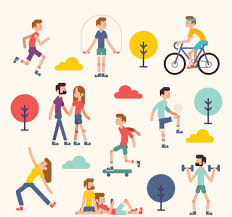

Beacons kunnen heel erg handig zijn en met onze app worden beacons nog handiger.
Onze app gaat gebruik maken van beacons om jouw te helpen met leren.
De app gaat opzoek naar een beacon en wanneer het er een heeft gevonden pakt het alle informatie daarvandaan en plakt het op jouw telefoonscherm.
 Onze school is met veel samenwerking bezig om onze app beter te maken zodat u de beste expierience van uw leven kunt verwachten.
Onze school is met veel samenwerking bezig om onze app beter te maken zodat u de beste expierience van uw leven kunt verwachten.

Natuurlijk vinden wij bewegen heel erg belangerijk daarom helpt onze app daar ook mee.
Het gebruikt beacons natuurlijk voor een goede expierence voor jou.
Sinds iedereen in de wereld opeens van telefonen houden hebben we ervoor gezorgd dat je beweegt en je telefoon gebruikt en dat je ook nog lol hebt!!